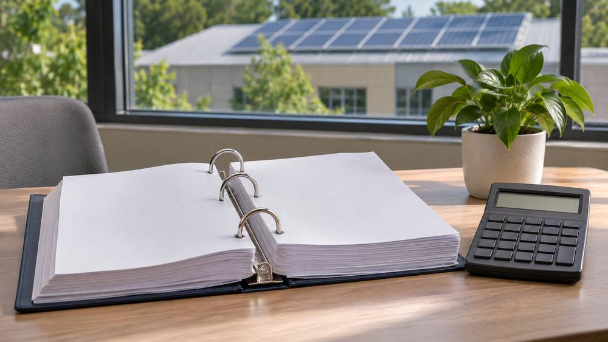

지방정부 감축인지 예산서, 4단계·유형별 산정으로 작성한다

광역·기초 지방정부 담당자 대상 지침서 설명회 / 감축 유형 5가지, 희망 지방정부엔 찾아가는 설명회
기후에너지환경부는 11월 17일 서울 중구 써밋원 서울역점에서 광역·기초 지방정부 담당자와 탄소중립센터 실무자를 대상으로 온실가스 감축인지 예산제 지침서 설명회를 열었다. 감축인지 예산제는 예산과 기금이 온실가스 감축에 미치는 영향을 분석해 재정 운용에 반영하는 제도다. 지침서는 예산서 작성을 감축사업 부합 여부 판단, 유형 분류, 효과 분석, 예산서 작성의 4단계로 나눴다.
감축 유형은 연·원료 소비 절감, 연·원료 대체, 온실가스 흡수, 배출 감소, 간접배출 감축 5가지다(도입 초기라 사업별이 아니라 유형별 산정 방법을 적용한다). 중앙정부는 「탄소중립기본법」 시행에 따라 2023회계연도부터 감축인지 예산서를 쓰고 있지만, 지방정부로 넓히는 데는 제약이 있었다. 역할은 기후부가 제도 총괄, 행정안전부가 운영기준 협조, 지방정부가 제도 운영, 탄소중립센터와 한국환경공단이 전문기관으로 나눴다.
기후부는 설명회 뒤에도 현장 의견을 받아 지침서를 보완하고, 희망하는 지방정부에는 찾아가는 설명회를 연다(날짜와 신청 창구는 발표 자료에 나오지 않았다). 이 지침서는 6월 29일 지방정부에 배포됐다.
뉴스 바로 읽기
본지가 공개 자료와 본지 보도로 확인한 사실만 덧붙입니다
설명회는 17일 오후 2시부터 4시까지 열렸고, 기후부의 지침서 설명(30분)과 한국환경공단의 중앙정부 운영 현황 발표(30분), 질의응답(20분) 등으로 진행됐다. 지침서는 효과 분석에서 감축 사업과 실증화 연구개발은 감축량을 숫자로 내고, 그 밖의 연구개발과 인식 제고 같은 정책지원 사업은 서술로 분석하게 했다. 보도자료와 붙임 2건은 정책브리핑 보도자료 쪽에서 내려받을 수 있다. 의견 제출 기한은 따로 정해지지 않았다.
출처: 기후에너지환경부 2026-11-17 지방정부 온실가스 감축인지 예산제도 확산시킨다… 지침서 밀착 안내(보도자료·붙임1 설명회 개최계획·붙임2 지침서 주요내용) 원문 보기
출처: 파이낸셜뉴스 2026-11-17 이유범 원문 보기